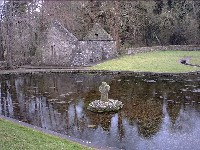

Patricks Well

Before the advent of Christianinity in ancient Ireland, well-worship was widely practiced. The wells were, from earliest times, popular assembly areas and also open air centres of pagan worship. St. Patrick on his journey throughout the country took advantage of these meeting places and adapted them to suit Christian worship - to preach the Gospel and Baptise new converts. St. Patrick's well with it's copious flow of water and fed by subterranean channels from underneath the limestone strata provides the earliest link with Christianity in the region. St. Patrick's Well, Clonmel
The rough sculptured stone Cross of the 5th Century is ample evidence of a Christian foundation at that time. The unusual drip stone leading from the well to the stream is of very ancient design. Another example of this stone is seen at St. Brigid's Well (contemporary of St. Patrick) in Kildare. Saint Patricks Church, Clonmel Here as elsewhere, there can be no doubt that stations or "Rounds" were performed since the days of St. Patrick. St. Patrick's Well, Clonmel Over the last number of decades the zeal and enthusiasm of the St. Patrick's Day Society (with the assistance of An Bord Failte and the Irish Israel Society of South California) have been responsible for the preservation and the improvement restoration works of St. Patrick's well. St Patrick's Church (in ruins) in the immediate vicinity of the well belongs to the period of Cistercian administration. It was built in the 15th or 16th century style and shows traces of many additions and reconstructions.

I